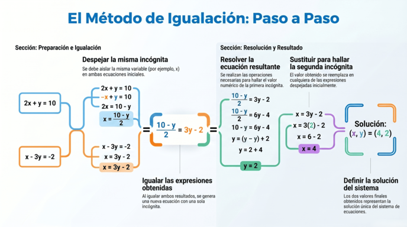
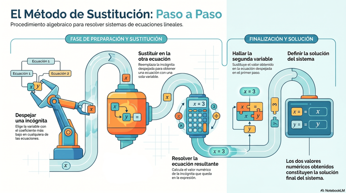
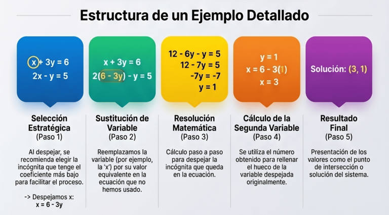
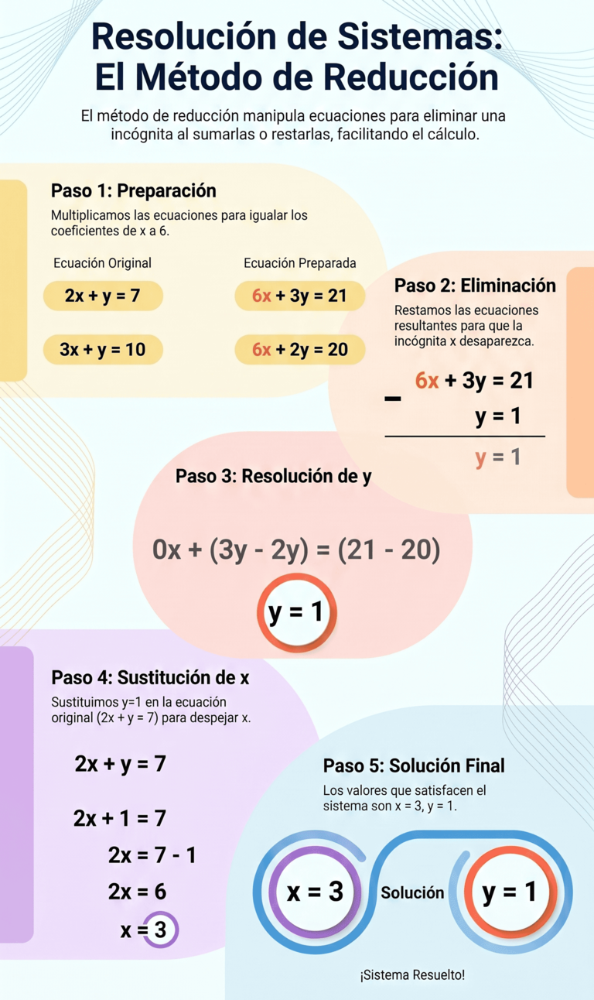

Las matemáticas tienen una estructura que es muy similar a muchos aspectos del mundo que nos rodea. Para poder dar un paso es necesario haber dado el paso previo.
En este apartado vamos a repasar los métodos de resolución de sistema de ecuaciones que viste en cursos anteriores. Los métodos seguramente los viste para sistemas de dos ecuaciones con dos incógnitas, pero son aplicables a cualquier situación. Existen tres métodos: Reducción, Sustitución e Igualación.
Igualación, sustitución y reducción
Método de igualación

Método de sustitución


Método de reducción

Completa
La empresa de transportes "El Gusanito Veloz", especializada en transporte infantil y juvenil, tiene varios grupos de clientes fijos para los que realiza excursiones a distintos lugares. El nuevo gerente quiere saber la cantidad fija de personas que componen esos grupos, pero al revisar los datos sólo tiene los resultados globales.
En concreto, trabaja con un club que tiene un grupo de futbol y otro de baloncesto. Siempre que viaja cada grupo lleva el mismo número de personas, entre jugadores, encargados y acompañantes. Sabe que el mes pasado hizo tres viajes con el grupo de futbol y dos con el de baloncesto y en total llevó a 141 personas. Hace dos meses realizó para el primer grupo dos viajes y para el de baloncesto cuatro, desplazando en total a 142.